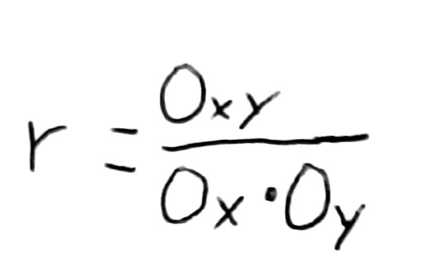
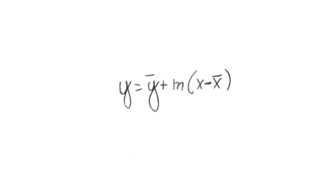
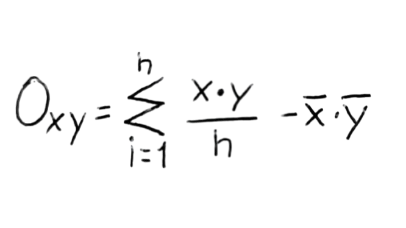
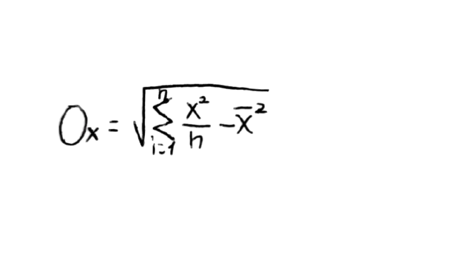
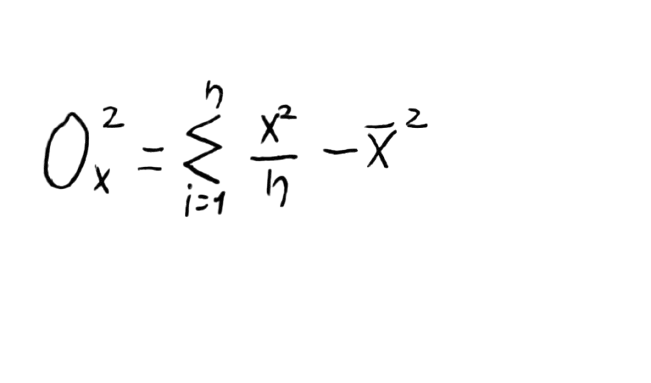

Regressione Lineare
By Thomas Rodia
La regressione lineare nasce per calcolare la retta approssimando al miglior modo (Secondo criteri condivisi) possiblie i punti dati
I calcoli necesarri sono 2 :

In cui



Questo sito farà questi calcoli per te.
Inserisci X e Y poi premi il pulsante "Aggiungi"
oppure
Inserisciun file in formato csv contenente in 2 colonne x e y, in questo modo
1,5
6,2
...,...
Poi premi il pulsante "Aggiungi da CSV"
Una volta aggiunti tutti i dati premere il pulsante "Calcola"